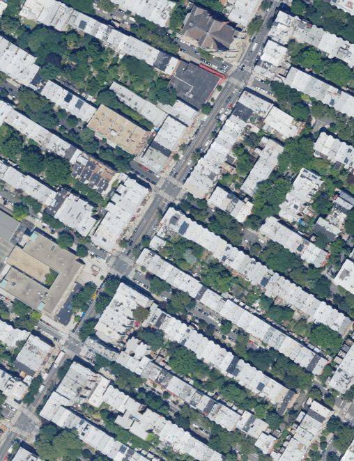
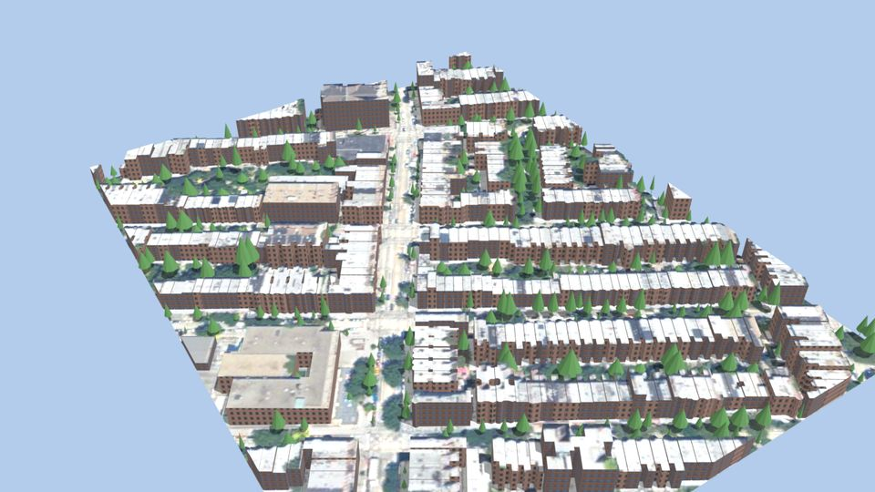
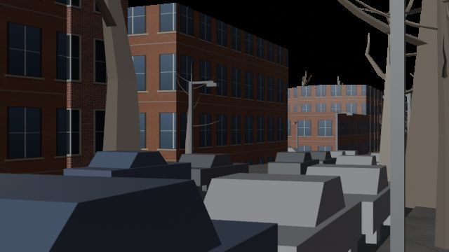
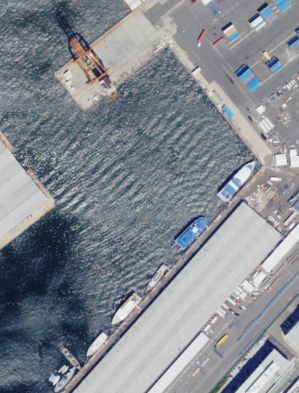
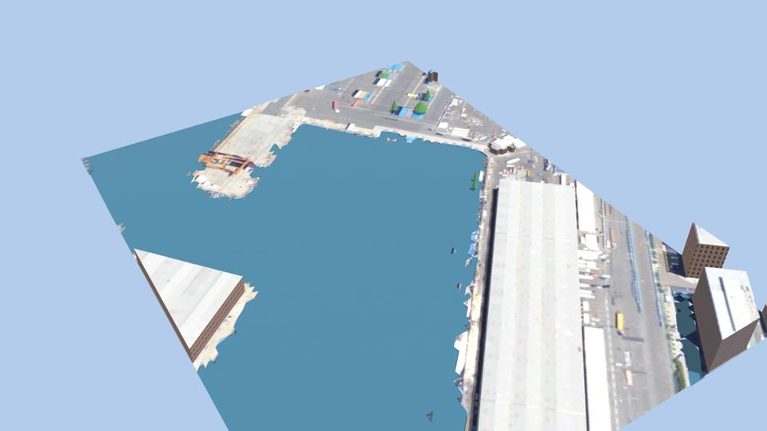

Play in the real world
Real places, ready for your game
Today a real place is modelled by hand from photos, extruded from map data into untextured boxes, or streamed from 3D tiles whose terms forbid keeping them.
You can have a US location built as one glTF from public aerial imagery and LiDAR: measured heights, the aerial photo on the roofs, and a file you can keep and ship. We do this with agents.

- 10US places built from public data, one run each
- 15–20 of 20routes complete in our walk-through test, per place
- 0 errorsin the Khronos glTF validator, on the file you can download
- Public domainimagery and LiDAR, so the file is yours to cache and ship
Same run, a different place

Routes completing out of 20 in our own walk-through test (no engine), one run each:
- Pacific Heights 20
- Austin’s Allandale (houses) 20
- Park Slope, Brooklyn (rowhouses, street trees) 18
- Red Hook port, Brooklyn (container terminal) 18
- Denver 18
- Seattle 18
- Dallas 18
- Kansas City 17
- Pittsburgh 17
- Boston’s Back Bay 16
- Downtown Austin 16
- SF Financial District 15
Without clipping heights to footprints, none of 20 complete. Runs took 15 to 32 minutes and $3.62 to $10.53 of model compute (not a price). Seattle’s LiDAR was missing from our usual catalogue; the agents found the USGS dataset themselves. Austin’s houses are measured but only 16% of places LiDAR puts above 3 m have anything built (the trees), and its ground has no roads. Park Slope’s 18 was a lucky draw: over 60 routes it is 78%. Red Hook built 6 structures (target 100), no cranes, ships or containers. Three other San Francisco sites and New York’s Financial District were not built in earlier runs and haven’t been re-run.
Sources: NAIP aerial imagery and USGS 3DEP LiDAR (public domain), Overture Maps building footprints (ODbL).





How it compares
Seven jobs that break when you build a real place, in the words of people doing it
Job 1 of 7
Find what’s there
The map doesn’t tell you what’s there. Map data only holds what someone tagged, so whole areas come in with streets and no buildings.
What people do today
- A Roblox developer building Tokyo traces roads from Google Earth screenshots and places buildings “completely eyeballed”, because exporting the building data was “too tedious”. Roblox devforum
- A buyer of a $125 Unity city generator: “rural or lesser-known areas often have almost no building data at all”. Unity Asset Store review
- Players of a real-city game find maps with “just streets and few buildings”. The answer they get is to edit OpenStreetMap and wait. Steam discussion
Job 2 of 7
Get real heights
From above you only see roofs. Heights, walls and overhangs have to come from somewhere. Open map data has heights for most buildings in many US cities and for few in others.
What people do today
- In Overture’s open building data for 13 US neighbourhoods we sampled, 11 have heights for 76–99% of buildings; downtown Kansas City has 36% and downtown Pittsburgh 12%. Where the tag is missing, map-based tools give every building the same height. Where it is present it can be a placeholder: in a block of houses we built in Austin, 80% of Overture heights sit at 4–6 m and they don’t track the LiDAR roof heights (correlation 0.03 over 106 buildings). Overture, October 2026 · FOSS4G 2023
- Heights estimated from imagery are loose. A USGS and Ohio State comparison against LiDAR-derived heights at two US sites: Microsoft’s imagery-based building heights agree at R² 0.54–0.60 (typical error 2.5–3.1 m); LiDAR-based USA Structures at 0.86–0.87 (1.8–2.2 m). CaGIS 2026 abstract
- A Houdini user extruding San Francisco from map data got uniform-height buildings. The thread is unanswered. SideFX forum, 2021
- Esri’s CityEngine builds city models from OpenStreetMap, but its own FAQ says it “does not support lidar data”; heights from lidar need a separate ArcGIS Pro workflow. CityEngine FAQ
- A studio rebuilding a Tokyo station measured by phone and from memory, and found the remembered measurements wrong. They aim for 5–10 cm; errors over 20 cm show. Digital Production, 2026
Job 3 of 7
Build it so you can keep it
The best-looking data can’t be kept. Photoreal 3D tiles look right but can’t be turned into game assets, so serious work goes back to modelling by hand.
What people do today
- A glider-sim developer asked to export Google’s 3D tiles as models. Cesium staff: not allowed under Google’s or Bing’s terms. Cesium forum, 2024
- Under a 610-point launch of San Francisco as a game, a professional said the same terms blocked their own project, and others asked “Is there a guide out there to do this for any area?” Hacker News, 2026
- A professional XR studio built a real station about 90% by hand in Blender, preferring that to scans whose topology it couldn’t edit. Digital Production, 2026
Job 4 of 7
Make it walkable
Players fall through it. A city that looks right still has to be walkable, collide and run, and generated or streamed geometry often isn’t.
What people do today
- Characters float above streamed 3D tiles; an aircraft sinks through buildings set to block everything. Unresolved across two years of threads. Cesium forum
- Buyers of a Unity city generator report navigation that “did not work” and roads “realy bad at usa highways and over hangs”. Unity Asset Store reviews
- Commenters on the San Francisco web game got stuck in terrain and hit 2 GB of memory and freezes. Hacker News, 2026
- A modder who built their hometown for BeamNG from LiDAR as glTF made about 95% of the buildings by hand and shipped them without collision meshes or LODs; a player reports 20 fps looking at them. BeamNG forum, 2026
Job 5 of 7
Texture the white boxes
Shapes arrive as white boxes. Measured buildings come without surfaces, and textures are the part people pay extra for.
What people do today
- Cesium staff, asked for textured buildings for a real place: “OpenStreetMap does not provide textures”. Cesium forum, 2025
- An archviz user’s generated city is “white blocks” and they want the satellite photo on them. D5 Render forum, 2025
- Blosm, the Blender map importer (2.1k stars), charges for one thing: textures, trees and imagery on terrain. GitHub
- A Unity developer fixes “flat-colored boxes” by painting a window texture on at runtime. Developer blog
Job 6 of 7
Take one day’s sun out of the photo
The photo has one day’s sun baked in. Put an aerial photo on a building and its shadows stay, whatever the game’s lighting.
What people do today
- Production de-lighting tools assume the capture avoided hard sun. Unity’s own guide calls strong directional shadows “a situation that must be avoided”, and falls back to Photoshop “to remove lighting artistically”. Unity Photogrammetry Workflow
- Metashape’s remove-lighting: “delighting in strong shadows is not supported.” Aerial imagery is flown in sunlight, so hard shadows are always there. Agisoft
Job 7 of 7
Get it into your engine
Many hops into the engine. Even with the data in hand, getting a real place into Unreal or Unity is a chain of tools and hand fixes.
What people do today
- “It’s a LOT of manual work”: a developer making 1:1 real cities in Unreal describes a five-tool hop and terrain data off by 20–30 m. Unreal forum, 2020
- A Houdini user building city blocks from OpenStreetMap plus a terrain heightfield has to match the two by hand. SideFX staff: “We don’t currently have any other tools that can do that aligning automatically.” Another user fetched heights from QGIS and aligned them themselves. SideFX forum, 2026
- Georeferenced data in Unreal: no native projection support, format hops, alignment issues. ISPRS, 2025
- A solo WW2 shooter developer imports real heights, imagery and streets, then hand-finishes roads, ground, structures and set dressing, and wants to “explore how to maybe automate”. itch.io devlog
You can start with one job or the whole place
Tell us which place, which of the seven jobs hurts most (or all of them), how you do it today, and what it costs you in people and weeks. We’d like to talk.